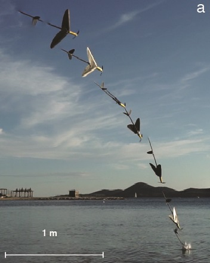
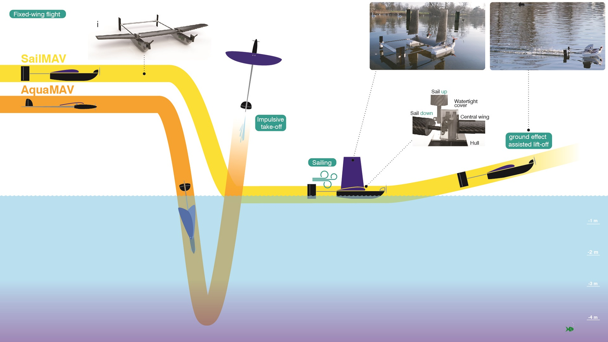

Aerial Aquatic Locomotion

Overview
The Aquatic Micro Air Vehicle or AquaMAV employs a novel aerial-aquatic locomotion approach, i.e. dynamic transition using a plunge diving maneuver, which is less sensitive to the sea state compared to landing on the water surface. From the air, the two flat-plate wings fold back, initiating a dive. The robot hits the water nose first, with the propellers off and folded. The wing morphing reduces the impact forces on the robot and the drag in water, permitting a dive to several meters depth. An unactuated gearbox reduces the rotation speed of the propeller to 1:15, resulting in more effective underwater motion. The AquaMAV impulsively jets out of the water. At this stage, the wings are extended, and propelled flight carries the vehicle for up to 5 km

Take-off of the Aquatic Jump-glider in an outdoor pond. The jet visible behind the robot propels it at up to 20G.
Adaptive Morphology in Aerial-Aquatic Robots
AMAM Conference 2019
Aerial-aquatic mobility is envisaged to significantly facilitate applications involving aquatic sampling or underwater surveying. Allowing water vehicles to take flight would allow for rapid deployment, access to remote areas, over-flying of obstacles and easy transitioning between separate bodies of water. The use of a single vehicle capable of reach-ing distant locations rapidly, conducting measurements and returning to base, would greatly improve upon the currentsolutions, which often involve integrating different types of vehicles (e.g. vessels carrying deployable submarines), orrely heavily on manpower (e.g. sensors deployed manually from ships). The usage of single adaptive multi-modalrobots for such applications could significantly improve the efficiency, costs and safety of such operations
PublicationWinner of the AAAI Video Competition 2017
Video highlights of AquaMAVs
Selected Media